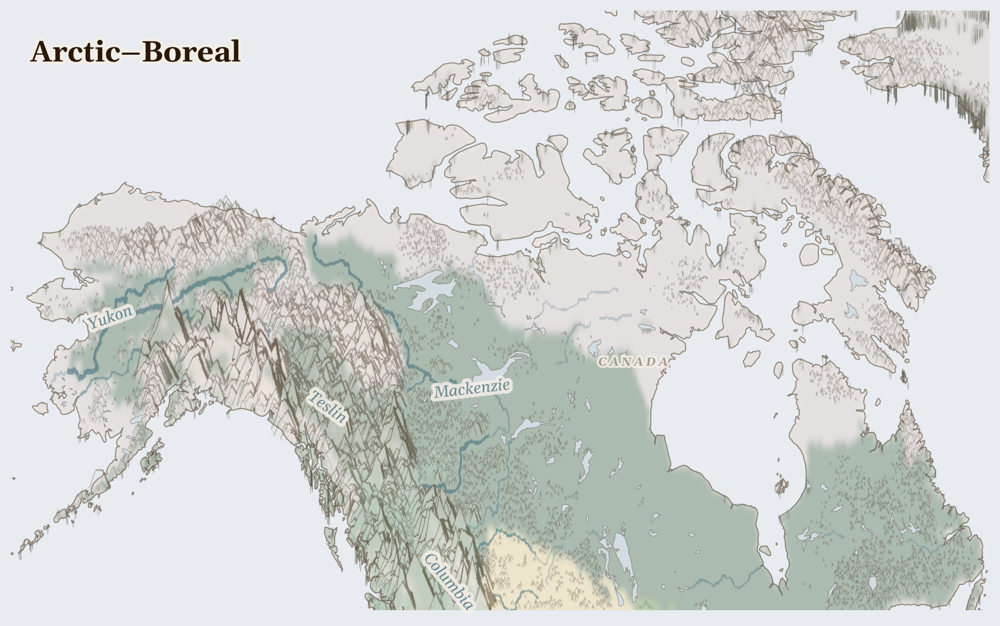

Arctic–Boreal
United States, Greenland, Canada
Nearctic
The top of the world — a ring of dark evergreen forest that gives way to open, treeless tundra, then to ice and snow. Winters are long and the nights are lit by dancing green lights. People here, like the Dene and the Inuit, have read this land like a book for thousands of years.
How Life Works Here
The land provides: caribou to follow, fish under the ice, berries in the brief bright summer. There is oil under the far north too, which big companies pump and pipe away south to make fuel — right across lands that belong to Indigenous peoples.
Inuit and Gwich'in hunters, Communities dependent on country food.
Oil companies (Suncor, Syncrude, CNRL), Downstream First Nations communities (Fort Chipewyan, Mikisew Cree).
Indigenous Arctic communities (Inuit, Yup'ik, Nenets) experiencing infrastructure collapse from ground subsidence, Global climate system (Arctic amplification accelerating warming at 3-4x global rate).
What Is Happening
This is a quiet, spacious place, and much about it is good. The hard question here is fairness and care: the oil pipelines cross the hunting lands and rivers of the first peoples, who were not always asked. And the whole north is warming faster than anywhere — the ice they travel on is thinning. So Indigenous nations are speaking up for their land and their rivers, teaching the old knowledge to their children, and asking the rest of us to use less of what melts their world.
Something Wonderful
This forest — the boreal — is the biggest on the whole planet, even bigger than the Amazon, and it rings the entire top of the Earth like a green crown. Every spring, billions of birds fly thousands of miles to nest in it. Your garden bird may summer at the top of the world.
Let's Do Something Together
Clean Water, Dirty Water
Put some soil in a cup of water and stir it up. Look how dirty it is! Now pour it through a cloth into another cup. The cloth catches the dirt. Many families do not have a way to clean their water. Think about how lucky we are to turn on a tap.
- two cups
- soil
- cloth or coffee filter
For grown-ups
Lack of water treatment infrastructure means waterborne disease remains a leading cause of child mortality in crisis zones. Filtration and purification require materials that are often unavailable.
Let Us Pray Together
Thank you for clean water, God. Please help children who drink dirty water.
Leader: We pray for those living under violence. For communities enduring fighting across ..
All: Lord, hear our prayer.
Leader: We pray for United States. Especially for United States, facing the most severe convergence of crises in this region.
All: Lord, hear our prayer.
Leader: We pray for the helpers. For humanitarian workers and missionaries in Arctic–Boreal.
All: Lord, hear our prayer.
Leader: We pray for seeds of hope. For every act of resistance and care in Arctic–Boreal.
All: Lord, hear our prayer.
The Lord is my light and my salvation; whom then shall I fear? The Lord is the strength of my life; of whom then shall I be afraid?
Collect
Almighty God, who called your Church to bear witness that you were in Christ reconciling the world to yourself: help us to proclaim the good news of your love, that all who hear it may be drawn to you; through him who was lifted up on the cross, and reigns with you in the unity of the Holy Spirit, one God, now and for ever.
Amen.
Talk About It
The people of the north use only what they need and leave the rest for next year. What is something you could take less of, so there's more left for later?
One Thing We Can Do
Tonight, turn off a light you don't need. The far north is warming because the world burns so much fuel — one small dark room is a little prayer for the ice, and for the people and caribou who travel on it.